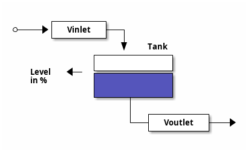

Welcome to the CENA DEMO
Glad to see that you are interested in our MTP-Control Engine Demo!
Outcome
This guide is designed to give you a step by step look into the usage of SEMODIAs MTP Control Engine (CENA) by featuring the following aspects:
introducing an example module which will be controlled using the CENA
optionally run the demo simulation on your own machine
gain an in-depth understanding of the code developed for integrating the CENA
get your hands dirty and play with the code provided by us
Note
With each step, the complexity increases. This approach allows you to grasp the fundamental concepts of the simulation without any prior knowledge, while also providing detailed development insights when needed!
Example application
It’s easier to picture what the CENA does if we have an application - don’t worry, we’ll keep it simple:
Because we don’t want to get any real hardware involved, our example application will “simulate” a tank with two binary valves (input and output) and an analog level sensor, as shown in the image below.
Think of this as your PEA module, which you want to make MTP-capable to expose its functionality. In that way it can be easily controlled by some kind of process orchestration layer (POL).
In our case the functionality or the “service” that we want to expose is to fully fill the tank by opening the inlet valve and contrariwise to fully drain it using the outlet valve. Additionally we also want to reveal the current fill level.
All of that is fairly simple to implement using the CENA! But before we check out the actual implementation, let’s see it in action and run the simulation!
Or skip this section and go directly to the detailed documentation (for developers) of the example.